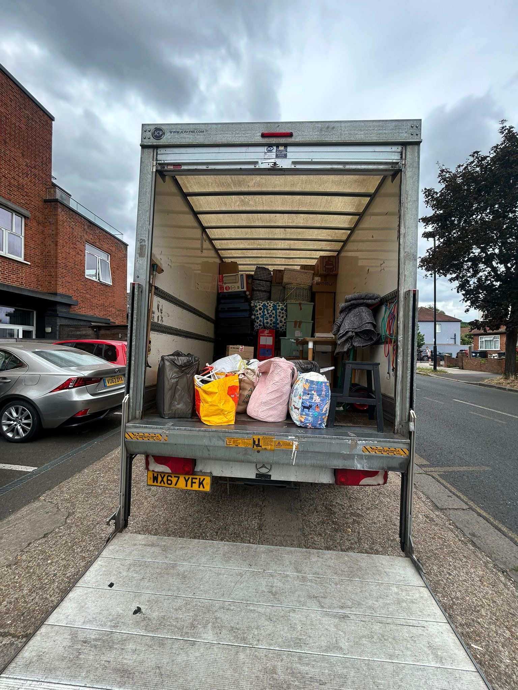

Removals Mitcham
Moving with children, school runs, work commitments, tenancy deadlines and landlord checkouts can feel chaotic long before the van arrives. Mudanzas Edyta London is the organised, careful team that makes a Mitcham home move manageable — with clear pricing, fair hourly rates and an instant online quote calculator so you know the costs before you commit.
We get it done right, on time, at a fair price, so you can focus on your family — not on parking fines, damaged furniture or a crew that disappears when the clock matters.
Moving With a Family Should Feel Supported, Not Overwhelming
Many Mitcham customers are juggling more than boxes. You may be coordinating school runs, keeping children settled, fitting the move around work, and still needing everything finished properly by checkout — without delays, damage or last-minute confusion.
Families moving near schools, planning catchment moves, or shifting between rental and first home often need practical support rather than extra stress. You cannot afford a van that arrives late, a team that rushes fragile items, or a day that overruns when keys and inspections are fixed.
We handle the move so you can focus on the family. That means organised planning, careful handling, realistic timings and communication you can rely on — whether you need full home removals Mitcham support or a focused man and van Mitcham slot for a smaller property move.
If you are comparing how we work in neighbouring postcodes, our approach to busy family streets is similar on Morden removals and Tooting moves, with the same emphasis on punctuality and clear expectations.

Mitcham Housing & Access: Local Streets, Real Planning
Mitcham is not one type of property. Victorian and Edwardian terraced houses sit alongside purpose-built estates, mid-century housing, newer flats and first-time buyer homes — plus a steady flow of rental moves where checkout timing is non-negotiable.
From Phipps Bridge Estate and Cranmer Estate to St Helier Estate access routes, Pollards Hill Estate, streets around Figges Marsh, Gorringe Park Avenue and Mitcham town centre, the last fifty metres of a move often decides whether the day feels calm or chaotic.
Tight terraced streets need sensible vehicle size and carry sequencing. Estate parking often depends on permissions that differ from the road outside. Flats may involve stairs, lifts or shared entrances. Town-centre collections need loading space planned against commuter and evening controls. Driveways and dropped kerbs can look convenient until enforcement or neighbour access makes them unusable for a Luton.
We plan each property move around what your address actually needs — not a generic London template. That local detail is what separates a reliable Mitcham moving service from a team that treats CR4 like any other pin on a map. For wider routes across the borough, see how we coordinate South West London removals when your job crosses into Wimbledon, Colliers Wood or Wandsworth.
Clear Pricing & Fair Value — No Moving-Day Surprises
We are not trying to be the lowest quote on a comparison site. We are trying to be the team you trust: transparent, organised and worth booking because the job is done properly. Many Mitcham customers are renters, first-time buyers or families balancing deposits, agency fees and moving costs — so clear pricing is not a marketing line, it is how you plan your month.
You get fair hourly rates, structured scope, and no hidden surprises once the crew is on site. Our instant quote calculator helps you understand estimated cost before you commit: addresses, timing, property size and access basics feed into a realistic figure we can confirm when your inventory or parking needs are clearer.
That means organised planning upfront, careful handling on the day, and a team that respects your budget without cutting corners on protection or punctuality. Value here is knowing what you are paying for — not discovering extras when you are already under pressure.
Check your estimated price online before you book.
Services for Mitcham Home Moves
Whether you need a full flat move or van and moving support for a partial load, we scale crew, materials and timing to your property — with the same careful standards on every job.
House & Flat Moves in Mitcham
House removals Mitcham and flat removals Mitcham planned around stairs, lifts, furniture size and kerb realities — from terraced fronts to estate layouts and town-centre flats.
Man and Van Mitcham
Focused man and van Mitcham support for smaller local moves, single rooms, storage runs and tighter budgets — still with proper blankets, discipline at the kerb and clear communication.
Packing & Unpacking Support
Room-by-room packing, fragile protection and unpack sequencing so essential items are usable quickly — especially helpful when children need beds, kitchen kit and school kit sorted first.
Furniture Disassembly & Assembly
Beds, wardrobes and bulky items dismantled for safe transport and rebuilt at delivery, with fixings tracked so nothing is left half-finished at the end of a long day.
End of Tenancy Cleaning
Handover-ready cleaning when checkout and inspection deadlines sit on the same day as keys — combine with your move plan so you are not chasing two providers.
Office & Small Business Moves
Compact office relocations and small business moves with sensible out-of-hours options where access is tight — planned with the same parking awareness as residential jobs.
Full detail on every option is on our services page. When you know your dates and addresses, use the instant quote tool to line up crew and vehicle size.
Parking, CPZ & Access Planning in Mitcham
On moving day, the kerb is part of the job. Mitcham’s Controlled Parking Zones decide where a van can wait, for how long, and whether you are loading legally or risking fines that throw the schedule off course.
FG1 around Figges Marsh operates 8:30am–6:30pm, Monday to Friday, with paid parking and permit bays. FG2 around Figges Marsh runs 8:30am–6:30pm, Monday to Sunday for permit holders only — no public pay bays. LS near Links Road / the Streatham border is 8:30am–6:30pm, Monday to Sunday, permit holders only.
MT covers Mitcham town peripheral areas with 11:00am–3:00pm, Monday to Friday part-day commuter control. MTC Mitcham Town Centre core runs 8:30am–11:00pm, Monday to Saturday with extended evening controls. MTC1 (town centre peripheral) is 8:30am–6:30pm, Monday to Saturday with mixed commuter and visitor bays. MTC2 (town centre residential pockets) is 8:30am–6:30pm, Monday to Saturday, permit holders only.
Across these Mitcham zones, parking is generally free on Christmas Day, Good Friday, Boxing Day, New Year’s Day and generic bank holidays — useful when you are planning a quieter window, though you should still confirm restrictions at the exact address.
Why this matters for your move: van placement, avoiding PCNs, keeping loading windows realistic and sequencing carries before enforcement or traffic closes your options. We build the day around legal stopping — not hope. Nearby moves follow the same discipline on Balham and Earlsfield streets where CPZ patterns differ but the principle is identical.
Commercial Vehicles & Removals Van Planning
Large vans cannot always rely on a resident permit alone. Merton permit restrictions apply to vehicles over 2.28m high or 5.25m long — dimensions that matter when you are booking a Luton for a whole-house move.
Large Luton vans may need a formal parking suspension or commercial dispensation. Formal bay suspensions typically need at least seven working days’ notice, so we prompt you early rather than leaving council paperwork to the last minute.
Where rules allow, loading on yellow lines may be possible for up to around 40 minutes when active loading is happening and there are no kerb loading restrictions. Loading in bays may be limited to around 20 minutes. Enforcement officers look for constant activity — a van sitting unattended can be ticketed, and taking breaks or packing inside the vehicle does not count as active loading.
We help customers understand what needs arranging before move day. That practical guidance is part of reliable home removals Mitcham work — especially on terraced streets and town-centre addresses where the wrong assumption costs more than the move itself.
School Streets & Family Timing
School run congestion is part of Mitcham life — and it affects removals too. School street schemes near Gorringe Park Primary School, St Thomas of Canterbury Catholic Primary and Liberty Primary typically restrict vehicle access during 8:15am–9:15am and 2:45pm–3:45pm, Monday to Friday in term time, with ANPR enforcement.
Removals vans and delivery vehicles do not automatically receive exemption. Arrival and departure should be planned outside these windows, alongside your own school run logistics — so children are not caught between a stressed parent and a van blocking the road.
We align collection and delivery bands with family routines where possible: earlier starts, mid-morning slots, or post–school-run windows that keep the day calmer. That is the same thoughtful planning families expect from a Mitcham moving service that understands rental deadlines and school calendars, not just cubic metres.
Rental & End of Tenancy Moves in Mitcham
A large share of Mitcham moves are tenancies: checkout deadlines, landlord inspections, inventory photos and the need to be out by a specific time — often the same day the next tenant or buyer expects access.
Combining removals with end of tenancy cleaning reduces stress because packing, transport and handover condition can be planned as one timeline rather than three separate panics. We coordinate scope on our services overview or through a quick conversation on contact when your agent has fixed the inspection slot.
Clear pricing helps renters budget the full move — van, labour, materials and cleaning — without hidden surprises when the keys are due back. You still get careful handling and organised planning; you are simply not paying for chaos on top of your deposit anxiety.
Why Choose Us for Mitcham Moves
Reputation is visible: 100+ five-star Google reviews and 45+ five-star Facebook reviews, with strong feedback across other platforms. Customers mention careful handling, punctuality, professionalism and excellent service — the outcomes that matter when your belongings and your deadline are on the line.
We are fully insured, family-run and offer a bilingual service for households that prefer clear communication in more than one language. You get clear pricing, practical planning for parking and access, and same-day availability when slots allow for urgent local work.
We are not based in Mitcham the way we are in Morden — and we do not pretend otherwise. What we offer here is reliability, fair value and a team that treats your move as seriously as you do. Compare our premium structured approach on Balham removals or the fast local model on Morden; on this page the promise is simpler: done right, on time, at a fair price.
Frequently Asked Questions
How does the instant quote calculator work for a Mitcham move?
Enter your collection and delivery addresses, date and an honest estimate of what you are moving. The calculator returns a fast estimated price for jobs that fit standard access. If you are in a permit zone, need a Luton, or have a large inventory, we confirm details before finalising crew and vehicle — still with clear numbers, not guesswork on the day.
Can you help if I live in a permit-controlled zone?
Yes. We plan around FG, LS, MT and MTC zones, advise on suspensions where a large van needs them, and build loading windows that match your CPZ — so you avoid fines and keep the schedule on track.
Do you move families with children and school timing restrictions?
Yes. We plan arrivals outside school street windows where ANPR applies, and we sequence the day so school runs and bedtimes are realistic — not an afterthought.
Can you help with packing and end of tenancy cleaning?
Yes. Packing, unpacking, furniture dismantling and end of tenancy cleaning can be booked together so checkout day is one coordinated plan. Ask via contact or note requirements when you request a quote.
Do you cover estates such as Phipps Bridge, Cranmer, St Helier or Pollards Hill?
Yes — we regularly plan moves on and around Phipps Bridge, Cranmer, St Helier, Pollards Hill, Figges Marsh and Gorringe Park. Tell us your exact building or street so we confirm parking permissions and the best approach route.
Get your Mitcham removal quote online and know your estimated price before you commit.
Clear pricing, careful handling and organised planning — so moving day is one less thing stealing attention from your family.